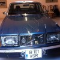

Angajaţii CFR nu şi-au mai primit salariile. Timp de o zi! Întârzierea de 24 de ore a lefurilor i-a lovit ca un trăsnet pe cinstiţii şi harnicii lucrători ai căilor ferate. Tocmai ei, “care au servit cu zel şi activitate” fără să bage în buzunar nici măcar o piuliţă, nici măcar un leuţ necuvenit, să [...]

Câteva sute de sociabili s-au strâns în Piaţa Universităţii pentru a comemora vocal o săptămână de frigidere pustii după sărbători. (sursa) Printre consumatorii de ceai la mitinguri în aer liber sunt ceva suspecţi de autism, care n-au aflat că USL e la putere de nouă luni de zile şi reiau obsedantul refren “Jos Băsescu”. Probabil [...]

În România sunt peste 16.000 de revoluţionari cu acte mai mult sau mai puţin în regulă, retribuiţi de la buget. Povestea spune că acum 23 de ani, aceşti eroi ai zilelor noastre au ieşit cu piepturile la baricade şi, în uralele concetăţenilor pitiţi după perdele sau ghemuiţi în faţa televizoarelor alb-negru, au recâştigat cu forţa [...]

Suntem vicecampioni mondiali la contribuţii plătite către stat, dar prim-ministrul Victor Ponta afirmă că în România sunt prea puţine taxe, iar impozitele sunt încă mici. Ca atare, guvernul USL-UNPR pregăteşte o nouă majorare a actualelor dări către stat şi instituirea unor biruri proaspete, după cum rezultă clar din afirmaţia şocantă făcută de premier chiar în [...]

Dear smartphone organizer, Dragă jurnalule, Am văzut eu într-un film difuzat la Diva Universal că o femeie puternică, independentă şi de succes îşi stabileşte la fiecare început de ianuarie câte o “rezoluţie pentru noul an“. La cei douăzeci şi … nu spun câţi ani ai mei, am deja o carieră în media, fac ceva în [...]

Non-ştirile zilei Ambele non-ştiri de azi au de-a face cu medicii: Sergiu Nicolaescu a fost diagnosticat greşit (sursa). Amintindu-ne că şi actorul Şerban Ionescu a păţit fix acelaşi lucru, deducem că doctorilor români nu le plac deloc artiştii. Sau că sunt de o incompetenţă ucigătoare. La propriu; Românii preferă să stea la cozi infernale pentru [...]

Bani, poze cu femei, informaţii despre fete de bani gata relativ agresate, adevărul despre pericolul supravegherii video ilegale şi fotografii cu vedete sexy. Astfel arată retrospectiva anului 2012 dacă luăm drept unic criteriu de performanţă traficul pe care cele mai populare articole l-au generat. Clasamentul celor mai bune subiecte abordate pe ACRU.ro (strict din punct de [...]

Fetelor, ce faceţi de Revelion? Fie că dormiţi, dansaţi, schiaţi, mâncaţi, incendiaţi maşina vecinului cu petarde ilegale sau prestaţi la ciocofon, trebuie să ştiţi că sunteţi pe cale de a rata oferta vieţii dumneavoastră. E vorba despre o propunere adresată exclusiv fetelor serioase, după cum puteţi vedea. Glumeţele şi femeile sunt rugate să se abţină [...]

Dacă pleci urechea la orice sondaj de opinie, anchetă socială, emisiune sau conversaţie de la colţul străzii, eşti tentat să crezi că momentul trecerii în 2013 îi va prinde pe toţi românii punându-şi una şi aceeaşi dorinţă fierbinte: să aibă locuri de muncă. Alimentată de gargara electorală şi de nostalgia Epocii de Aur, în care Partidul [...]
Credeaţi că numerele de înmatriculare personalizate sunt apanajul meltenilor dornici să circule cu IS-01-BOS / ZEU / GOD sau slăbiciunea piţipoancelor care nu-şi pot ţuguia buzele decât în oglinda maşinii cu plăcuţele B-69-ROZ / MIS / UBI? Ei bine, obiceiul afişării statutului imaginar ori real prin intermediul talonului auto se poarta şi la case mai [...]

A început sezonul creştinismului cu anasâna, al fericirii obligatorii şi al hărniciei impuse. În decembrie, cutuma religioasă ne sfătuieşte să fim mai buni, mai darnici şi mai iertători. Tot acum, convenţiile sociale ne cer să fim veseli, cheltuitori şi cu chef de petrecere. Asta în vreme ce tradiţiile de familie spun că nu trebuie să [...]

Guvernul Ponta 2.0 (unde cea de-a doua cifră reprezintă rata de absorbţie a fondurilor europene) e pregătit să ia în stăpânire ce a mai rămas din România. Surse realiste ne-au declarat că executivul PSD-PNL-PC-UNPR ar trebui format numai din parlamentari aleşi pe 9 decembrie sub sigla alianţei, date fiind competenţa, inteligenţa, realizările, probitatea morală şi [...]